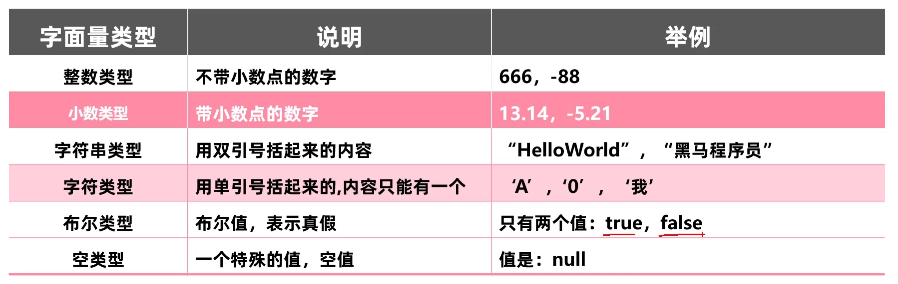
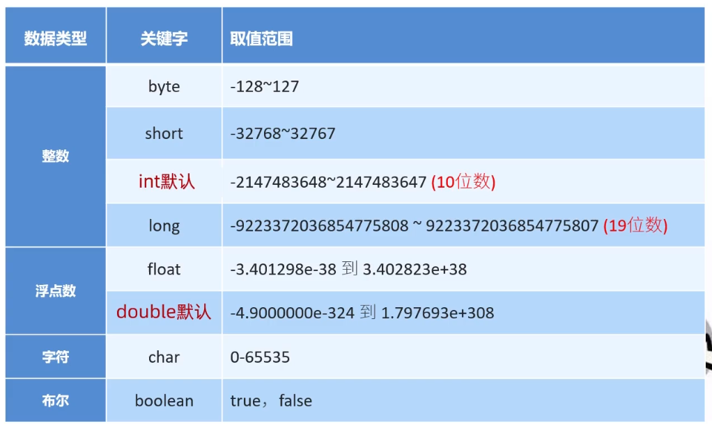
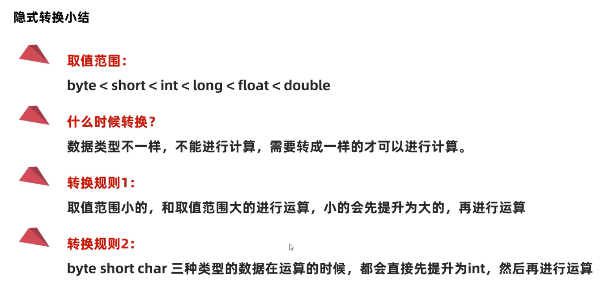
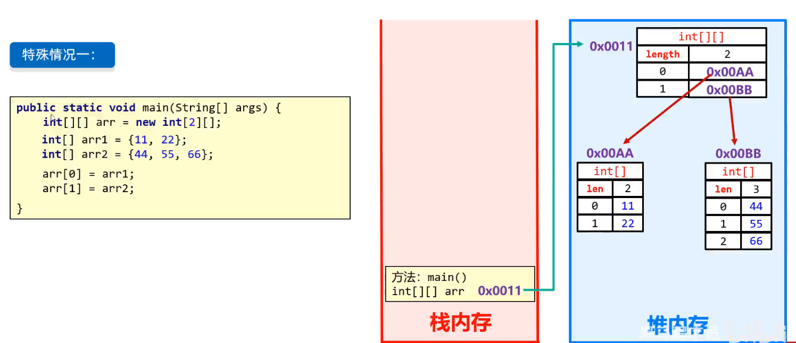
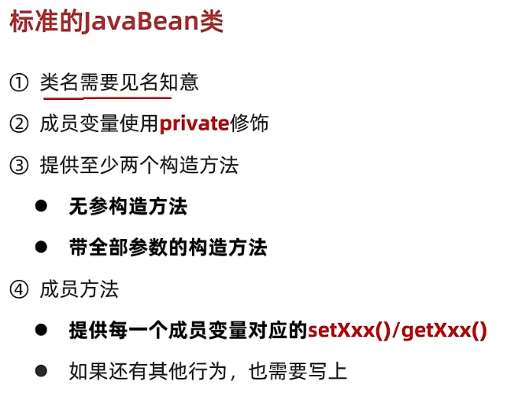
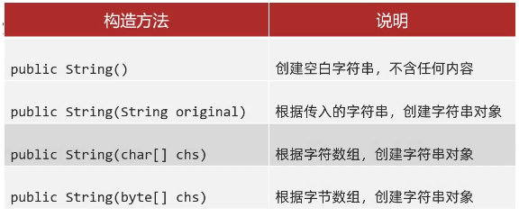
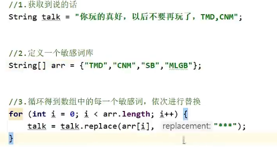
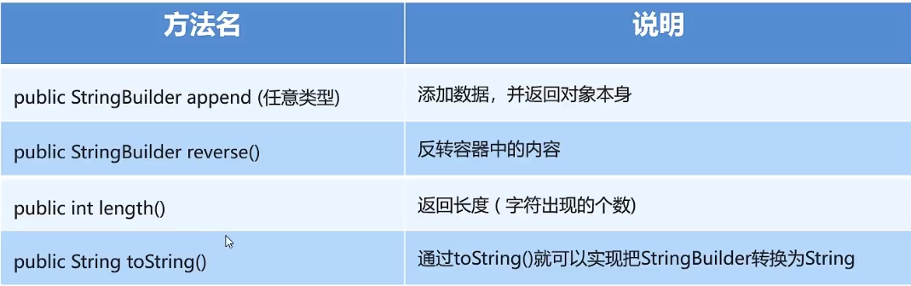

javaSE
JAVA
有两大类核心技术:
- javaSE:普通的桌面应用 控制台
- javaEE:开发网站
基本认识
JDK vs JRE
JDK（Java Development Kit）
作用：JDK 是用于开发 Java 程序的工具包，它不仅包含 JRE，还包含编译和调试工具。
组成：
- JRE：包含执行 Java 应用程序所需的所有环境。
- 编译器（javac）：将 Java 源代码编译为字节码（
.class文件）。- 工具（如调试器、解释器）：用于开发、编译、打包和调试 Java 程序的工具。
- 库：提供用于开发应用程序的标准 Java 类库。
总结：JDK 是一个完整的开发工具包，适合开发人员使用，允许编写、编译、调试和运行 Java 程序。
JRE（Java Runtime Environment）
- 作用：JRE 是运行 Java 程序所需的环境，它提供了执行 Java 应用程序的基础环境，但不包括编译器等开发工具。
- 组成：
- Java 虚拟机（JVM）：用于执行 Java 字节码的虚拟机。
- 类库：支持 Java 程序运行的核心库（标准类库，如 Java API）。
- 其他资源：如支持图形界面的类,运行工具等。
总结：JRE 是一个运行环境，只适合运行现有的 Java 应用程序，而不适合用于开发。
结构
project --> module --> package --> class
字节码文件
字节码文件（bytecode file）是源代码编译后生成的一种中间代码文件，它是一种低级的、与平台无关的代码表示形式。字节码文件通常无法直接由计算机硬件执行，但可以被特定的虚拟机（如 Java 虚拟机 JVM 或 Python 的解释器）读取和执行。
基础语法
字面量

基本数据类型

1 | long i = 999999999999L; |
运算符

输入输出
1 | System.out.println("first try");//打印完换行 |
1 | Scanner input = new Scanner(System.in);//创建扫描仪对象 |
Scanner 是一个类，它位于 java.util 包中。Scanner 类用于从各种输入源读取数据，比如从控制台、文件、字符串等读取用户输入或数据。
常用的 Scanner 方法
Scanner 类提供了多种方法来读取不同类型的数据，包括 next() 系列方法和 hasNext() 系列方法。以下是一些常用方法：
-
nextLine()
- 读取整行的字符串输入，直到检测到换行符（Enter）。
- 示例：
1
2
3Scanner scanner = new Scanner(System.in);
String line = scanner.nextLine();
System.out.println("You entered: " + line);
-
next()
- 读取一个字符串，以空格或换行符作为分隔符，读取到第一个空格前的数据。
- 示例：
1
2
3Scanner scanner = new Scanner(System.in);
String word = scanner.next();
System.out.println("First word: " + word);
-
nextInt()
- 读取一个整数类型的数据。
- 示例：
1
2
3Scanner scanner = new Scanner(System.in);
int number = scanner.nextInt();
System.out.println("You entered number: " + number);
-
nextDouble()
- 读取一个双精度浮点类型的数据。
- 示例：
1
2
3Scanner scanner = new Scanner(System.in);
double num = scanner.nextDouble();
System.out.println("You entered double: " + num);
-
hasNext()
- 判断是否还有下一个输入项（通常用于循环读取）。
- 示例：
1
2
3
4Scanner scanner = new Scanner(System.in);
while (scanner.hasNext()) {
System.out.println(scanner.next());
}
-
hasNextInt()
- 判断下一个输入项是否为整数类型。
- 示例：
1
2
3
4
5Scanner scanner = new Scanner(System.in);
if (scanner.hasNextInt()) {
int num = scanner.nextInt();
System.out.println("You entered an integer: " + num);
}
-
hasNextDouble()
- 判断下一个输入项是否为双精度浮点类型。
-
useDelimiter(String pattern)
- 设置扫描器的分隔符，默认是空格，可以通过这个方法来设置自定义的分隔符。
- 示例：
1
2
3
4
5Scanner scanner = new Scanner("apple,banana,orange");
scanner.useDelimiter(",");
while (scanner.hasNext()) {
System.out.println(scanner.next());
}
选择结构
if结构
1 | Scanner input = new Scanner(System.in); |
switch选择结构
1 | public class Main { |
switch 语句的条件只能是整数、枚举、字符或字符串等有限的数据类型，无法处理更复杂的条件表达式
1 | switch(num){ |
循环结构
for循环
1 | public class Main { |
while循环
1 | public class Main { |
do-while循环
1 | public class Main { |
break：立即退出整个循环，跳到循环后面的代码继续执行。
continue：跳过当前循环的剩余部分，直接进行下一次循环判断
tips:随机数 Random
1 | import java.util.Random; |
基本知识
数组
Java 中的数组是用于存储固定大小的相同类型元素的集合。数组中的每个元素都通过索引访问，并且索引从 0 开始。
数组声明
在 Java 中，声明一个数组的方式如下：
1 | // 语法1：数据类型[] 数组名; |
两种方式都可以声明数组，不过第一种更常见。
数组初始化
数组声明后可以通过两种方式初始化：静态初始化和动态初始化。
-
静态初始化：在声明时直接给定数组的初始值。
1
2int[] array = new int[]{1, 2, 3, 4, 5};
int[] array = {1, 2, 3, 4, 5}; // 静态初始化，长度为5 -
动态初始化：先指定数组的长度，再赋值。
1
2
3int[] array = new int[5]; // 动态初始化，创建长度为5的数组
array[0] = 1; // 为第一个元素赋值
array[1] = 2; // 为第二个元素赋值
访问数组元素
数组中的每个元素通过索引来访问，索引从 0 开始。例如：
1 | int[] array = {10, 20, 30, 40, 50}; |
注意：访问越界的索引会抛出 ArrayIndexOutOfBoundsException 异常。
1 | System.out.println(array[5]); // 抛出异常：ArrayIndexOutOfBoundsException |
数组的长度
可以通过 .length 属性获取数组的长度（即数组中元素的个数），这是数组的一个固定属性，不会改变。
1 | int[] array = {10, 20, 30}; |
多维数组
Java 中支持多维数组，最常用的是二维数组，它可以看作是一个数组的数组。二维数组的声明和初始化方式如下：
声明二维数组
1 | int[][] matrix; // 声明一个二维数组 |
初始化二维数组
-
动态初始化二维数组
1
int[][] matrix = new int[3][4]; // 创建一个3行4列的二维数组
-
静态初始化二维数组
1
2
3
4
5int[][] matrix = {
{1, 2, 3, 4},
{5, 6, 7, 8},
{9, 10, 11, 12}
};
访问二维数组的元素
二维数组的元素通过两次索引访问：
1 | System.out.println(matrix[0][0]); // 输出：1 |
非规则数组（稀疏数组）
在 Java 中，可以创建“非规则”的二维数组，即每一行的列数不同：
1 | int[][] irregularArray = new int[3][]; |

拷贝
1 | int [] arr1 = {11,22}; |
System.arraycopy()
Java 提供了 System.arraycopy() 方法来复制数组的元素：
1 | int[] sourceArray = {1, 2, 3, 4, 5}; |
Arrays.copyOf()
java.util.Arrays 类提供了 copyOf 方法来复制数组。
1 | int[] newArray = Arrays.copyOf(sourceArray, sourceArray.length); |
排序
Java 提供了内置的 Arrays.sort() 方法，可以快速对数组进行排序。
1 | int[] array = {3, 5, 1, 4, 2}; |
遍历
使用 for 循环遍历
1 | int[] array = {10, 20, 30, 40, 50}; |
使用 for-each 循环遍历
1 | for (int value : array) { |
方法
即c++中的函数
public static 返回值类型 方法名 (参数){
return 返回值;
}
1 | //1.无返回值 无参数 |
方法之间不能嵌套
方法的重载
- 在同一个类中,定义了多个同名的方法,这些方法具有同种功能
- 每个方法有不同的参数类型或参数个数,这些方法构成了重载(与返回值无关)
参数不同:个数 类型 顺序
1 | public class HelloWorld {//同一个类 |
面向对象基础
类与对象
类的定义
1 | public class Phone { |
对象的使用
1 | public static void main(String[] args) |
javabean类
- 在此类中不写main方法
- 之前编写main方法的类叫做测试类,在测试类中穿件javabean类的对象并赋值调用
在实际开发中:
- 类名的首字母大写,驼峰模式
- 建议一个文件定义一个class类
封装:面向对象的三大特征之一,告诉我们如何正确设计对象的属性和方法。
private关键字:
- 权限修饰符
- 可以修饰成员(成员变量和成员方法)
- 被private修饰的成员只能在本类中访问,可以针对每一个私有化成员变量提供set和get方法
this关键字:
- 当成员变量与局部变量重名时,就近原则,可以使用this代指成员变量
- 代表方法调用者的地址值
构造方法
- 方法名与类名相同
- 没有返回值类型,连void也不写
- 没有具体返回值,不可以写return
- 构造方法可以重载
- 创造对象的时候由虚拟机自动调用给成员变量初始化
1 | //空参构造 |
一般上述二者都写

字符串String
java.lang.String,由于java.lang是java的核心包,所以使用不需要导包
- Java程序中的所有字符串文字都为此类的对象
- 字符串不可以改变,它们的值在创建后不能被更改
创建String对象
- 直接赋值
- 当使用双引号直接赋值的时候,系统会检查**串池(string table)**中是否存在,不存在才创建新的,存在就复用,节约内存
- new关键字
- 在堆内存开辟空间
- 
1 | //直接赋值 |
字符串比较
==比较原理:
- 基本数据类型:比较的是具体数据值 eg:int
- 引用数据类型:比较的是地址值 eg:String
1 | //boolean equals方法(要比较的字符串) 完全一样结果才是true |
字符串遍历
1 | public char charAt(int index);//根据索引返回字符 |
1 | String str = "01234"; |
字符串截取
1 | String substring(int beginIndex,int endIndex);//[beginIndex,endIndex)返回值才是截取的小串 |
1 | public static String subPhoneNum(String num) |
字符串替换
1 | String replace(旧值,新值) |

StringBuilder
可以看成一个容器,创建之后里面的内容是可变的,可以提高字符串的操作效率
打印StringBuilder对象不再是地址值,而是属性
构造方法
| 方法名 | 功能说明 | 示例代码 | 说明 |
|---|---|---|---|
StringBuilder() |
创建空的 StringBuilder |
StringBuilder sb = new StringBuilder(); |
默认容量16 |
StringBuilder(String str) |
用字符串初始化 | StringBuilder sb = new StringBuilder("Hello"); |
内容为 “Hello” |
StringBuilder(int capacity) |
指定初始容量 | StringBuilder sb = new StringBuilder(100); |
初始容量100 |
常用方法
